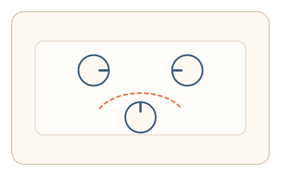
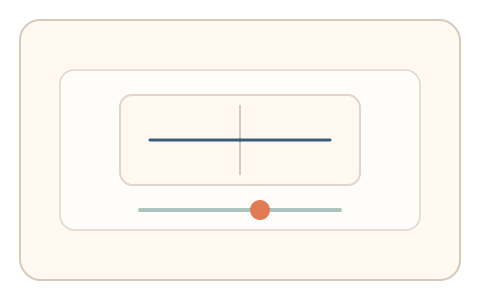

#104
Morphological Analysis - Combination Batches
已扩展
虚轮廓‑对称联测
先描绘 Kanizsa 虚轮廓，再微调对称阈值，以反应时与调整幅度的关系验证真实性。
概念原文
先描绘 Kanizsa 虚轮廓，再微调对称阈值，系统对两步的反应时与调整幅度做任务内比较。任务结构为多阶段，信号形态为轨迹动力学与阈值调节。
组合“补全能力”与“对称敏感度”。
研究背景
虚轮廓补全体现人类的整体感知能力，对称阈值反映感知敏感度。两步任务结合可形成更稳定的区分信号。
核心机制
- 呈现 Kanizsa 虚轮廓并要求描绘轮廓。
- 进入对称阈值滑杆微调。
- 记录描绘反应时与阈值调整幅度。
- 进行任务内相对比较判定。
用户流程
- 步骤 1：用户描绘虚轮廓边界。
- 步骤 2：用户微调对称阈值。
- 步骤 3：系统比较反应时与幅度并判定。
判定信号
虚轮廓描绘反应时
补全能力影响完成速度。
对称阈值调整幅度
对称敏感度有稳定分布。
判定逻辑
反应时与阈值幅度需落在人类区间且相对关系合理；过度极端或无微调判异常。
对抗面
- 脚本直接描绘轮廓并固定阈值
- 重放真实用户的描绘轨迹
防御与缓解
- 随机化虚轮廓形态与对称参数
- 加入轻微噪声降低模板化
- 叠加描绘速度与停顿信号
可达性与风险
提供更大图形与慢速模式，允许选择题替代描绘。
- 虚轮廓感知能力差异导致误拒
- 设备显示质量影响虚轮廓效果
可视化状态

状态 1：虚轮廓描绘
用户描绘 Kanizsa 虚轮廓。

状态 2：对称微调
微调对称阈值。

状态 3：联测判定
比较两步指标判定。
参考资料
Kanizsa triangle
说明虚轮廓补全的感知基础。
Symmetry
说明对称感知与阈值判断。